SSH 설정, 공개키 설정, PORT 및 SSH 관리
IP 셋팅
- 고정 IP할당(GUI)
- IP: 143.248.111.111
- Subnet Mask: 255.255.255.0
- Gateway: 143.248.11.1
- DNS: 143.248.1.177, 143.248.2.177
IP는 막 지어냄
- 만약 공유기 안쓰면 IP 그대로 연결하면 됨
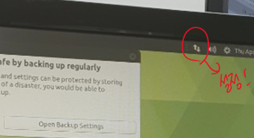- IP설정에 고정 IP 넣기
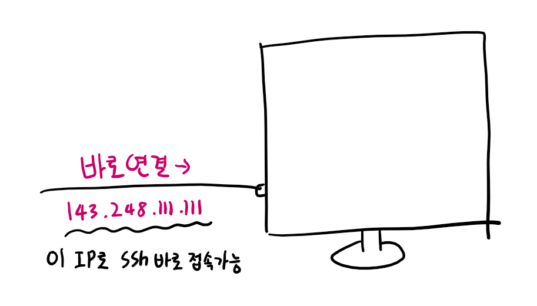 - 바로 연결가능
- IP설정에 고정 IP 넣기
- IP를 공유기에 연결한 경우
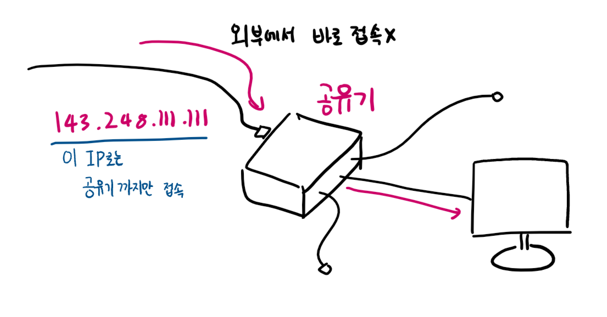
- 이 경우 당연히 바로 접속X
포트 포워딩 설정해야함 - 그냥 꼽고 DHCP로 설정해보자
ifconfig
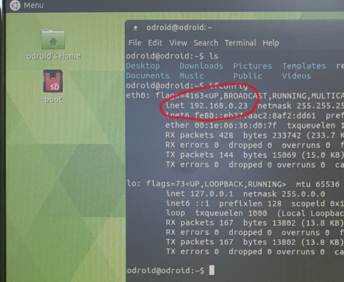
192.168.0.23으로 나오는데, 이것은 공유기가 준 동적 IP
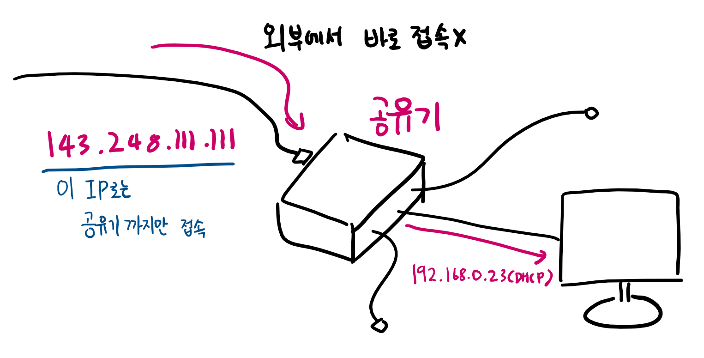- 공유기 설정 페이지 가자 DHCP로 받은 IP에
끝자리 1- 192.168.0.1
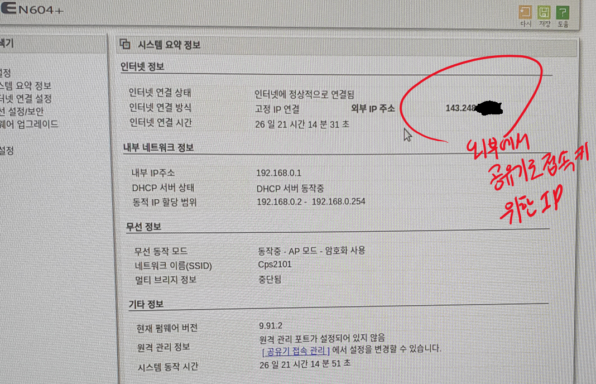
외부 IP 주소 확인
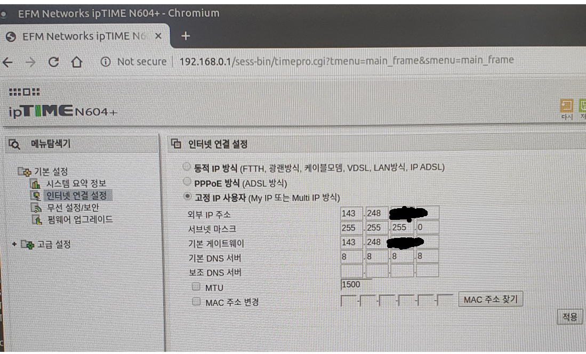
설정
NAT -> 포트포워딩
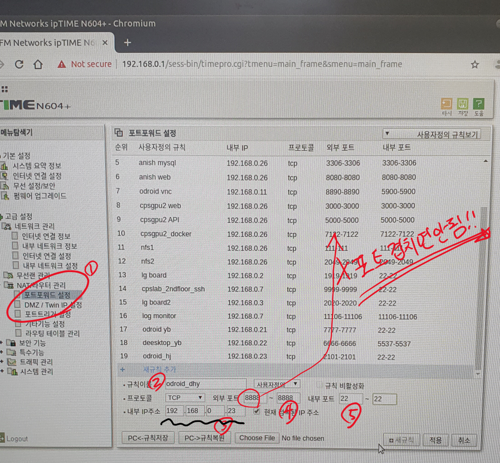
4번외부포트 설정! 나중에 ssh로 접속할 포트 ssh -p8888 143.248.111.111
5번내부 포트는 22<–ssh용 리눅스 포트
- 192.168.0.1
- 이 경우 당연히 바로 접속X
- 최종
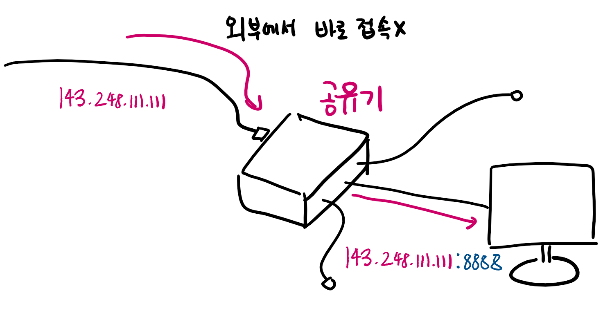
결국 외부 IP:포트로 접속하면 됨 내부에선 공유기가준 IP로 인식
공개키 설정
공개키 어떻게 작동?
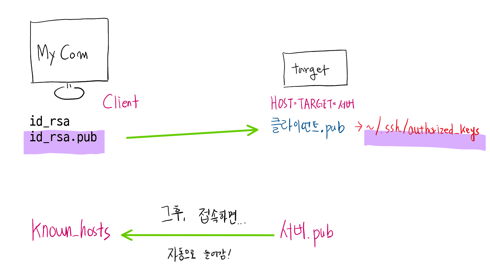
- My Com에서 id_rsa.pub가 공개키
- id_rsa.pub를 target에 보내 authorized_keys에 맨 밑줄에 넣는다.
- 그 후, 접속하면 자동으로 이제 서버.pub 공개키가 내 컴퓨터의 known_hosts에 넣음
- 이 후, 비번 없이 됨
HOST(Target) Server에서 먼저 할 일: ssh 설치, ssh 대몬, ssh restart
- ssh 서버 설치
$ sudo apt install openssh-server $ sudo apt install ssh - sshd/ssh Daemon Process 실행
$ sudo service ssh start # 혹은 $ sudo systemctl start ssh- ssh 서비스를 시작할 때마다 실행해야 하면 매우 빡친다.
- 시스템이 ssh 연결을 받을 때마다 자동으로 sshd를 열어주고 실행하자
$ sudo systemctl enable ssh - ssh restart
$ sudo service ssh restart # 혹은 $ sudo systemctl restart ssh
공개키 만들기
공개키 만들기 Windows
- 만약 OpenSSH가 Windows에 안깔린 경우
Powershell을 관리자 권한으로 실행
Get-WindowsCapability -Online | ? Name -like 'OpenSSH*' # 입력
# This should return the following output:
Name : OpenSSH.Client~~~~0.0.1.0
State : NotPresent
Name : OpenSSH.Server~~~~0.0.1.0
State : NotPresent
# 그런 다음 서버 및/또는 클라이언트 기능을 설치합니다.
# Install the OpenSSH Client
Add-WindowsCapability -Online -Name OpenSSH.Client~~~~0.0.1.0
# Install the OpenSSH Server
Add-WindowsCapability -Online -Name OpenSSH.Server~~~~0.0.1.0
# Both of these should return the following output:
Path :
Online : True
RestartNeeded : False
- cmd창 켜서 공개키 경로로 가봄!!
C:\Users\UserID\.ssh -
위 경로에 ssh파일을 두는데 만약 아래 처럼, 이미 id_rsa파일 이있다면 공개키가 있는 거임 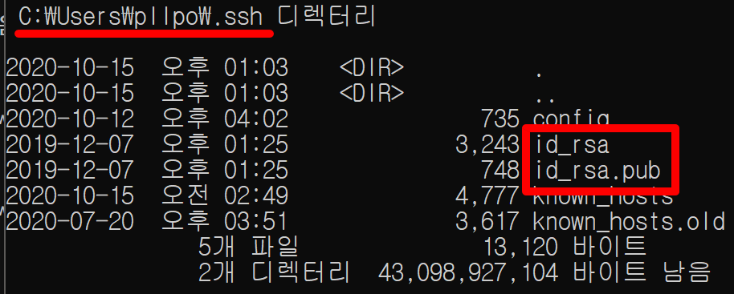
- 처음 만드는 경우 아래와 같이 한다.
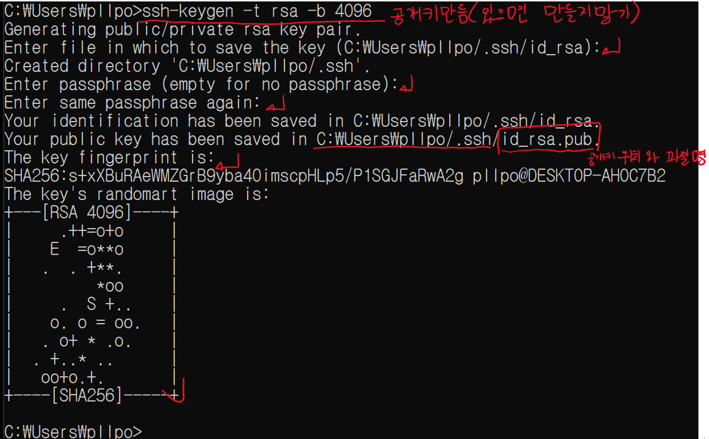
공개키 Target에 전송 Windows
- 공개키를 target에 전송한다.
- 보낼 파일: C:\User\pllpo.ssh\id_rsa
.pub- 반드시 .pub파일을 보내야함
- scp 명령어로 보내자
$ scp [-P[PORT]] C:\User\pllpo\.ssh\id_rsa.pub HOST_ID@HOST_IP:[SAVE PATH]
예) Target IP가 125.131.74.188, Target Port가 50622라면$ scp -P50622 C:\User\pllpo\.ssh\id_rsa.pub pllpokko@125.131.74.188:~/tmp.pub
- 보낼 파일: C:\User\pllpo.ssh\id_rsa
- 그다음은 Target 공개키 셋팅 참고
공개키 만들기 Ubuntu
- Ubuntu Client에서 공개키 만들기
- 먼저 있는지 체크
~/.ssh/id_rsa.pub 가 있으면 이미 있는거 - 없다면 만들자!
$ ssh-keygen -t rsa -b 4096 $ 엔터 연타 $ ${HOME}/.ssh/id_rsa{,.pub} 로 생성됨
- 먼저 있는지 체크
공개키 Target에 전송 Ubuntu
- 공개키를 target에 전송한다.
- 보낼 파일: ${HOME}/.ssh/id_rsa
.pub- 반드시 .pub파일을 보내야함
- scp 명령어로 보내자
$ scp [-P[PORT]] ${HOME}/.ssh/id_rsa.pub HOST_ID@HOST_IP:[SAVE PATH]
예) Target IP가 125.131.74.188, Target Port가 50622라면$ scp -P50622 ${HOME}/.ssh/id_rsa.pub pllpokko@125.131.74.188:~/tmp.pub
- 보낼 파일: ${HOME}/.ssh/id_rsa
- 그다음은 Target 공개키 셋팅 참고
TARGET에서 공개키 셋팅
- Target host에 ssh 접속한다.
$ ssh -p 50622 pllpokko@125.131.74.188 - 아래와 같이 authorized_keys에 공개키를 셋팅한다.
- 참고로 보낸 공개키 위치와 파일명은 ~/tmp.pub이다.
$ mkdir -p ~/.ssh $ chmod 700 ~/.ssh $ cat ~/tmp.pub >> ~/.ssh/authorized_keys $ chmod 600 ~/.ssh/authorized_keys $ rm -f ~/tmp.pub
- 참고로 보낸 공개키 위치와 파일명은 ~/tmp.pub이다.
공개키 오류
WARNING: REMOTE HOST IDENTIFICATION HAS CHANGED!
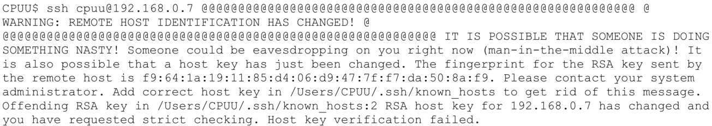
- WARNING: REMOTE HOST IDENTIFICATION HAS CHANGED! 메시지로 ssh 접속이 안된다.
- 이유는 192.168.0.7이라는 IP로 기존에 접속한 적이 있는 서버와 RSA 공유키를 교환한 상태에서,
192.168.0.7이라는 서버가 바뀌었기 때문이다.- ex) 192.168.0.7 IP를 가진 라즈베리 파이에 꼽혀있는 LAN으로 SSH 접속을 하다가, 이 LAN을 다른 컴퓨터에 꽂아 같은 IP를 쓰게 된 상황
- Man in the Middle Attack이라는 중간자 공격에 대해 경고한다.
- 즉, 기존에 서버가 알고 있는 정보를 찾아가 따라갔더니 전혀 다른 서버로 접속된 것이다.
- 이 경우 내가 잘못 관리한 것 이기 때문에 스푸핑 현상이다. 아래와 같은 명령어를 통해 초기화 시킨다.
# My computer
$ ssh-keygen -R [상대 IP]
혹은
$ ${HOME}/.ssh/known_hosts 에서 상대IP 제거
hosts.deny error
- target ssh에 접속이 hosts.deny error를 뱉으면서 안될 때, Target 컴퓨터를 직접 킨다.
- 다음 파일을 편집
$ sudo vim /etc/hosts.deny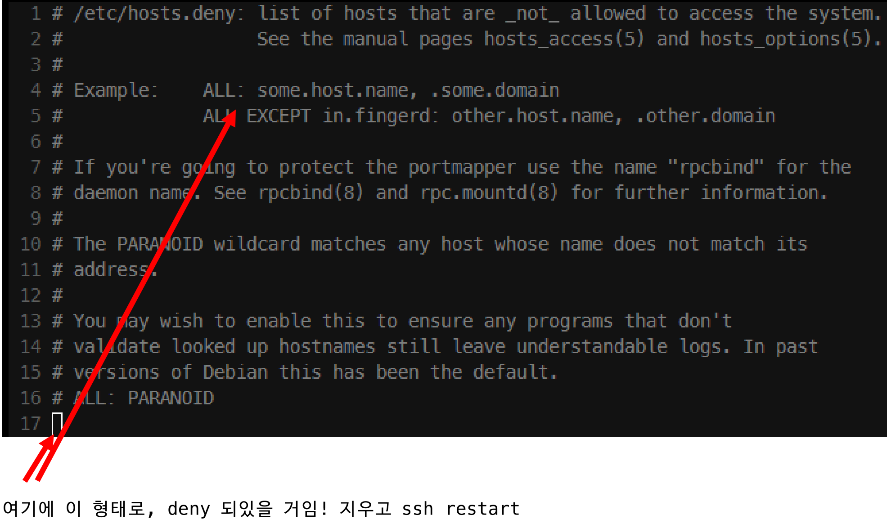
- ssh restart 해야 적용 됨
- ssh restart방법 여기 참고
TARGET ssh key 바뀌었을 때 error
- 내 컴퓨터에 .ssh/known_hosts에서 알고 있는 타겟의 isa가 바뀌어 isa.pub가 바뀜
- 아래 키워드 입력
# My Computer
$ ssh-keygen -f ${HOME}/.ssh/known_hosts -R [상대 IP]
ex)
$ ssh-keygen -f ${HOME}/.ssh/known_hosts -R 143.248.147.13
ssh 관리
ssh server 내부 PORT 바꾸기
- ssh용 내부 Port는 22
/etc/ssh/sshd_config에서 ssh 서버 포트를 바꿀 수 있다.line 13: Port 22- 여기서 원하는 포트 번호를 바꾸고 저장하고 나가기
- ssh용 내부 port번호는 22, 1024~65535 추천
- sshd 대몬을 restart해야 적용된다.
- ssh restart방법 여기 참고
사용중인 PORT 검색
- 프로세스 이름으로 검색
$ cat /etc/services | grep [PROCESS NAME]
ex)
$ cat /etc/services | grep ssh
ssh 22/tcp # ssh Remote Login Protocol
- 특정 PORT 사용중? 인지 검색
$ ss -tulpn | grep 2222
$ netstat -tulpn | grep 2222
- LISTEN 중인 port 전부 찾기
$ lsof -i -P -n | grep -i listen
ssh 잘 동작하는지 상태 체크
$ systemctl status sshd
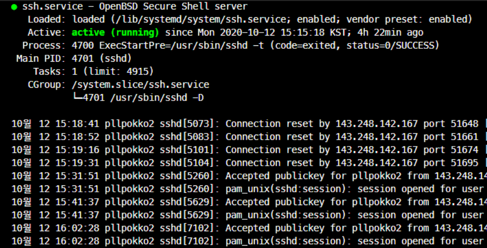
- 잘 동작함
SSH로 원격 명령 내려보기
- target에 root 로그인 허용
Target에 들어가서 아래와 같이 실행$ sudo vi /etc/ssh/sshd_config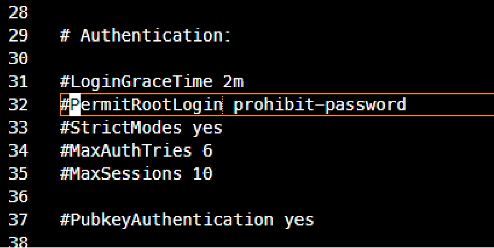
- 저 곳을 주석 해제 한 후 ssh restart
- 타겟에서 원격으로 실행 시키고 싶은 커맨드를 client에서 배시 셸 스크립트로 만든다.
- command.sh를 만들고 아래와 같이 remote 실행 커맨드를 작성해보자
#!/bin bash
LD_PRELOAD="/home/root/libHybridCL.so" \
/home/root/clExample 16 16 1024 1024
주의! 절대 경로를 줘야하며, server내의 쉘 파일을 열어 그안의 커맨드를 실행하는 것은 안됨
- 아래와 같은 커맨드로 Remote command를 실행한다.
client에서 아래 커맨드 실행$ ssh [-p PORT] [TARGET ID]@[TARGET IP] 'bash -s' < [REMOTE COMMAND SCRIPT FILE] - 우리가 만든 command.sh을 서버에 리모트 명령 실행 해보자.
$ ssh -p8022 root@143.248.147.22 'bash -s' < command.sh